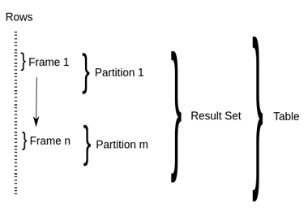

hive中的window function详解
基本概念
窗口聚合函数 是指那些在一个window(很多个记录)内进行计算的函数，而这个window的又和current row有很大的关系；
概念

(Partition BY Order BY ROW|RANGE BETWEEN Windowing specification)
window frame
winfow frame决定了对于当前row来说，window function应该作用在那个row范围里
range vs rows
如果order by 没有windows frame clause， 那么window 为
RANGE BETWEEN UNBOUNDED PRECEDING AND CURRENT ROW
如果order by 与 window clause 都没有
那就是
ROW BETWEEN UNBOUNDED PRECEGING AND UNBOUNDED FOLLOWING
When ORDER BY is specified with missing WINDOW clause, the WINDOW specification defaults to RANGE BETWEEN UNBOUNDED PRECEDING AND CURRENT ROW.
When both ORDER BY and WINDOW clauses are missing, the WINDOW specification defaults to ROW BETWEEN UNBOUNDED PRECEDING AND UNBOUNDED FOLLOWING.
- 可以使用的类型
所有window function的计算都是基于当前frame的
| type | function | sample | desc | case |
|---|---|---|---|---|
| windowing function | LEAD(col,n,DEFAULT) | LEAD(10) | 在current row之后的第n条记录 | |
| windowing function | LAG(col,n,DEFAULT) | LAG(10) | 在current row之前的第n条记录 | |
| windowing function | FIRST_VALUE | FIRST_VALUE(column) | 返回window中column的第一条记录 | |
| windowing function | FIRST_VALUE | LAST_VALUE(column) | 返回window中column的最后一条记录 | |
| Analytics function | RANK | RANK() | 排序号,如果要一样的，那么返回一样的值，但是下一个序号就给省略了，比如 1，1，3这种 | |
| Analytics function | ROW_NUMBER | ROW_NUMBER() | 直接就是row number | |
| Analytics function | DENSE_RANK | DENSE_RANK() | 类似rank，但是返回连续的1，1，2这种 | |
| Analytics function | CUME_DIST | CUME_DIST() | 小于等于当前值的行数/分组内总行数,算是某种算分布的算法 | 比如，统计小于等于当前薪水的人数，所占总人数的比例 |
| Analytics function | PERCENT_RANK | 分组内当前行的RANK值-1/分组内总行数-1 | ||
| Analytics function | NTILE | NTILE(5) | 把frame按照顺序分组为n份，然后返回当前分组的序号，如果不整除，默认增加第1个分组的量；其实某种程序来说，这也算是一个rank方法 | |
| aggregates function | COUNT | count(column) | ||
| aggregates function | SUM | |||
| aggregates function | MIN | |||
| aggregates function | MAX | |||
| aggregates function | AVG |
window也可以有aliases
比如
1 | SELECT a, SUM(b) OVER w |
案例
- 连续活跃7天的用户
表定义
1 | CREATE TABLE `user_log`( |
基本思想是选择每个用户7天的滑窗，只有在条数为7并且日期差为6的时候，就是连续活跃7天；
1 | SELECT user_id, |
注意我注释掉了一行，待会说这个的作用，结果为
1 | user_id active_date count diff |
id为1与6的这些count与diff没有问题，但是id为2，3，4这些不满足一个滑窗的数据有错误；其count应该连续下降，以及diff最后一个值应该是0；
这大概是hive的bug吧；
据说有一种方法是，再增加一个滑窗，我们把sql里的注释去掉，
1 | SELECT user_id, |
结果为
1 | user_id active_date count diff count_now |
所以我怀疑hive是在check不超过一个滑窗时，就没有对数据进行排序了。为了验证我的思想，我把id=2的数据增加到了7条，id=3的数据增加到了6条，id=4的数据增加到了5条
再次运行不带额外窗口的sql
1 | user_id active_date count diff |
结果还是有bug；所以为了稳妥起见，还是带上额外的窗口吧
完整版的sql
1 | SELECT user_id |
结果
1 | user_id |
这里的取巧在于，我们已经知道窗口大小，设置为7天，但是如果我们不知道滑窗大小呢？比如下一题
- 用户的连续活跃最大天数
还是以上的数据集，这种时候窗口大小肯定是整个partition，但是我们注意到如果日期是连续的，那么他们的 date 减去 row number，如果得到的结果相同，那么就是连续的数据结果为1
2
3
4
5
6
7
8
9
10
11
12
13SELECT user_id,
active_date,
date_sub(active_date, ROW_NUMBER() over `w` ) as base_date
FROM
-- 首先去重
(
SELECT user_id,
active_date
FROM user_log
GROUP BY user_id,
active_date
) user_log_1
window `w` AS (partition BY user_id order by active_date )所以完整版也呼之欲出了1
2
3
4
5
6
7
8
9
10
11
12
13
14
15
16
17
18
19
20
21
22
23
24
25
26
27
28
29
30
31
32
33
34
35
36
37
38
39
40
41
42
43
44user_id active_date base_date
1 2020-05-01 2020-04-30
1 2020-05-02 2020-04-30
1 2020-05-04 2020-05-01
1 2020-05-05 2020-05-01
1 2020-05-06 2020-05-01
1 2020-05-07 2020-05-01
1 2020-05-08 2020-05-01
1 2020-05-09 2020-05-01
1 2020-05-10 2020-05-01
1 2020-05-11 2020-05-01
1 2020-05-14 2020-05-03
1 2020-05-22 2020-05-10
2 2020-05-02 2020-05-01
2 2020-05-04 2020-05-02
2 2020-05-07 2020-05-04
2 2020-05-08 2020-05-04
2 2020-05-09 2020-05-04
2 2020-05-10 2020-05-04
2 2020-05-20 2020-05-13
3 2020-05-01 2020-04-30
3 2020-05-02 2020-04-30
3 2020-05-04 2020-05-01
3 2020-05-07 2020-05-03
3 2020-05-08 2020-05-03
3 2020-05-10 2020-05-04
4 2020-05-01 2020-04-30
4 2020-05-02 2020-04-30
4 2020-05-04 2020-05-01
4 2020-05-08 2020-05-04
4 2020-05-22 2020-05-17
5 2020-05-10 2020-05-09
6 2020-05-01 2020-04-30
6 2020-05-02 2020-04-30
6 2020-05-04 2020-05-01
6 2020-05-05 2020-05-01
6 2020-05-06 2020-05-01
6 2020-05-07 2020-05-01
6 2020-05-08 2020-05-01
6 2020-05-09 2020-05-01
6 2020-05-10 2020-05-01
6 2020-05-11 2020-05-01
6 2020-05-14 2020-05-03
6 2020-05-22 2020-05-10结果为1
2
3
4
5
6
7
8
9
10
11
12
13
14
15
16
17
18
19
20select user_id, max(count)
from
(select user_id, count(1) as count
from
(SELECT user_id,
active_date,
date_sub(active_date, ROW_NUMBER() over `w` ) as base_date
FROM
-- 首先去重
(
SELECT user_id,
active_date
FROM user_log
GROUP BY user_id,
active_date
) user_log_1
window `w` AS (partition BY user_id order by active_date )
)user_log_2
group by user_id, base_date) user_log_3
group by user_id用这种方法找连续活跃7天的数据也是ok的。1
2
3
4
5
6
7user_id _c1
1 8
2 4
3 2
4 2
5 1
6 8 - 其他的方法
我们知道在指定滑窗大小的时候，可以使用row，代表往前或者往后的多少条，是固定的，与业务数据无关；是否可以根据记录的数值，来动态的选择滑窗的大小呢？
range就是这样，
RANGE BETWEEN 100 PRECEDING AND 200 FOLLOWING ；假如当前值为 200，那么就会选择字段落在100到400间的记录
可以把时间转换为数字然后利用range取到一周的区间，看是否有7条记录也ok
1 | SELECT user_id |
结果
1 | user_id |
说到底，这是一种如何定义窗口跟利用hql的语言使用窗口的语言；来，我们看看如何在spark、flink这些语言中，定义与使用窗口
链接
- hive官网说明
- http://shzhangji.com/blog/2017/09/04/hive-window-and-analytical-functions/
- http://lxw1234.com/archives/tag/hive-window-functions
重点可以看他的window specification说明 - https://bigdataprogrammers.com/windowing-functions-in-hive/
关于如何使用range window frame
The window ranges today are numeric constants, whereas, in the spec, you can have arbitrary numerical expressions. And in Hive, you don’t have date intervals. So if you want to do date-based windows, you pretty much have to break down the date into components, and treat each component as a int.